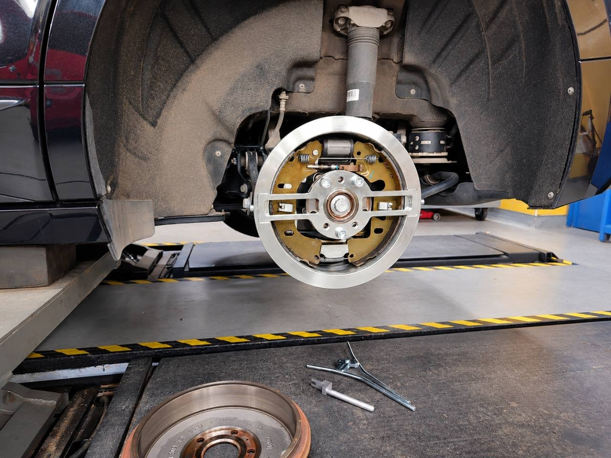
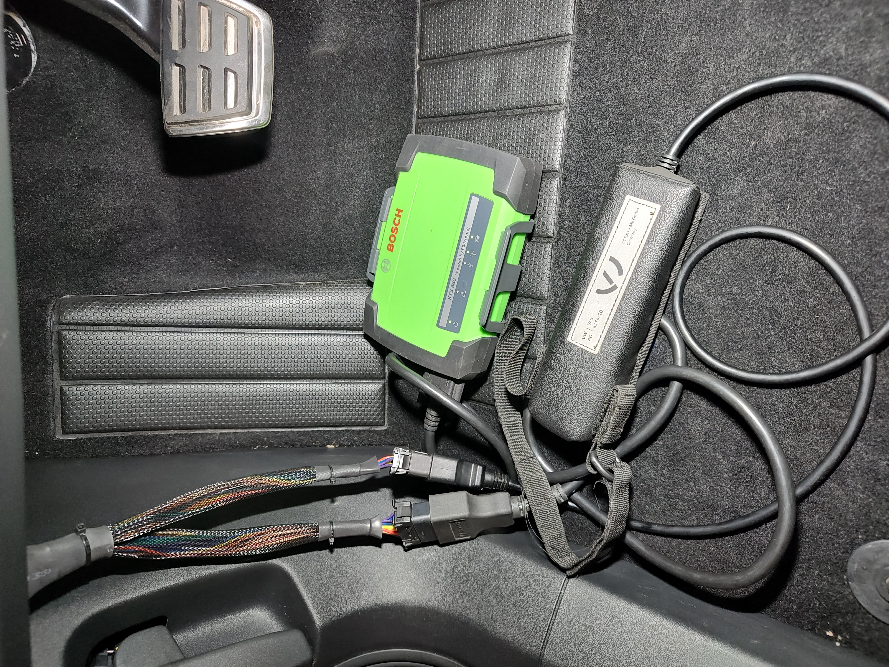

Bảo dưỡng phanh tang trống sau xe điện
Phanh tang trống sau của xe điện - kiểm tra chuyên gia và điều chỉnh chính xác.
Škoda Enyaq, Volkswagen ID.3, ID.4, ID.5, ID. Buzz và các xe điện khác thuộc nhóm Volkswagen được trang bị phanh trống sau.
Kiểm tra, bảo dưỡng và điều chỉnh cơ bản cơ cấu phanh theo tài liệu bảo dưỡng của xe cụ thể. Điều chỉnh không tự động là một phần bắt buộc của mỗi lần kiểm tra dịch vụ thông thường.

Tại sao phanh trống sau của xe điện cần sự chú ý đặc biệt?
Khi giảm tốc, xe điện sử dụng đáng kể chức năng phanh tái sinh để thu hồi năng lượng. Vì vậy, mô-tơ điện đảm nhận một phần tác dụng phanh và phanh cơ khí có thể được sử dụng ít thường xuyên hơn trong vận hành thông thường.
Điều này góp phần làm giảm độ mòn của má phanh nhưng đồng thời tạo ra các yêu cầu cụ thể về việc kiểm tra và bảo dưỡng hệ thống phanh.
Mặc dù cấu trúc khép kín của phanh tang trống giúp bảo vệ khỏi các tác động từ bên ngoài, nhưng các vấn đề về chức năng của phanh cơ có thể xảy ra khi hơi ẩm xâm nhập, ăn mòn, ngừng hoạt động trong thời gian dài hoặc sử dụng hạn chế.
Các biểu hiện có thể xảy ra là sự ăn mòn bề mặt làm việc của trống phanh, guốc phanh bị kẹt do gỉ hoặc bị bó, khả năng di chuyển hạn chế của cơ cấu điều chỉnh hoặc phanh không mong muốn.
Do đó, độ mòn của má phanh thấp không nhất thiết có nghĩa là tình trạng kỹ thuật của phanh sau hoàn hảo.
Kiểm tra và bảo trì chuyên nghiệp
Trong quá trình kiểm tra chuyên nghiệp phanh tang trống phía sau, chúng tôi chú ý đến tình trạng bề mặt làm việc của tang trống, guốc phanh, lò xo hồi vị, cơ cấu điều chỉnh tự động và khả năng di chuyển của từng bộ phận.
Chúng tôi cũng tập trung vào các dấu hiệu có thể xảy ra của sự ăn mòn, cọ xát, dính và lực cản phanh không mong muốn.
Tình trạng kỹ thuật chính xác của cơ cấu phanh rất quan trọng đối với chức năng đáng tin cậy của cả phanh chính và phanh đỗ cơ điện.
Điều chỉnh chính xác bằng công cụ đặc biệt T10635
Khi công việc bảo dưỡng yêu cầu thiết lập cơ bản guốc phanh theo quy định, chúng tôi sử dụng dụng cụ chuyên dùng thuộc dòng T10635.
Dụng cụ cho phép thiết lập chính xác vị trí ban đầu của guốc phanh thông qua cơ cấu điều chỉnh tự động theo quy trình bảo dưỡng liên quan của nhà sản xuất.
Cài đặt chính xác giúp đảm bảo phanh sau hoạt động như mong muốn và giảm nguy cơ phanh không mong muốn hoặc hư hỏng cơ cấu phanh.
Lực cản phanh kéo dài có thể làm tăng tiêu thụ điện và ảnh hưởng tiêu cực đến quãng đường đi được của xe điện.
Các biến thể tương ứng của công cụ T10635 được sử dụng cho các mẫu và thiết kế phanh sau riêng lẻ. Quy trình cụ thể luôn được điều chỉnh bởi tài liệu dịch vụ liên quan.
Điều quan trọng với khách hàng là kết quả đúng của toàn bộ sửa chữa: tình trạng cơ cấu phanh, điều chỉnh cơ khí phù hợp và các chức năng tiếp theo do nhà sản xuất quy định. Phạm vi cần thiết phụ thuộc vào xe và công việc đã thực hiện.
Chẩn đoán chính hãng ODIS khi thay má phanh
Khi thay má phanh tang trống sau trên một xe Škoda Enyaq cụ thể, chúng tôi đã so sánh các chức năng dịch vụ của thiết bị chẩn đoán đa thương hiệu chuyên nghiệp Bosch KTS 560 / ESI[tronic] với thiết bị chẩn đoán chính hãng ODIS Service. Chúng tôi tập trung vào việc kiểm soát phanh đậu xe và các thủ tục kiểm soát sau đó.

Sự khác biệt được ghi lại trong chẩn đoán
Trong menu Bosch có các chức năng vô hiệu hóa phanh đỗ để thay má phanh và kích hoạt phanh đỗ sau khi thay má phanh.
ODIS có một mục riêng "Cài đặt cơ bản phanh đỗ (kiểm tra chức năng)" trong menu chức năng có hướng dẫn. Đồng thời, chương trình “Thay má phanh” chỉ ra việc đưa dẫn động bên trái và bên phải về chế độ bình thường và thao tác “Kiểm tra chức năng của hệ thống phanh” tiếp theo.
Trong các menu Bosch được ghi nhận, không có mục riêng tương ứng với phép kiểm tra này. Tuy nhiên, điều này không chứng minh rằng một hành động tương tự không phải là một phần của chức năng ESI[tronic] khác, ví dụ như kích hoạt phanh đậu xe sau khi thay má phanh.
Hai cơ cấu chấp hành, hai bộ điều khiển
Theo thông tin ODIS được hiển thị, đối với xe thử nghiệm, động cơ phanh đậu bên trái V282 được điều khiển bởi đơn vị ABS J104, trong khi động cơ bên phải V283 được điều khiển bởi đơn vị tăng cường phanh J539. Chương trình ODIS rõ ràng kêu gọi sự chú ý đến phân vùng này và cho thấy việc thực hiện trong hai bước.
Khi đánh giá phạm vi của chức năng dịch vụ, do đó cần phải tính đến công việc với cả hai cơ cấu chấp hành và tính liên tục của từng bước. Chỉ riêng tên gọi "tích hoạt phanh đậu xe" không mô tả toàn bộ nội dung của thủ tục chẩn đoán.
Chúng tôi sử dụng thiết bị gì tại J&S SERVIS
Để bảo dưỡng xe của Tập đoàn Volkswagen, ngoài thiết bị chẩn đoán đa thương hiệu chuyên nghiệp, chúng tôi còn có ODIS Service với quyền truy cập trực tuyến vào hệ thống của nhà sản xuất. Nhờ đó, trên từng xe cụ thể, chúng tôi có thể sử dụng các chức năng có hướng dẫn và chương trình kiểm tra tương ứng của ODIS.
Chúng tôi chọn quy trình dịch vụ theo tài liệu của chiếc xe nhất định và việc can thiệp đang được thực hiện. Hoạt động chẩn đoán bổ sung cho phần cơ khí của việc sửa chữa; phạm vi và kết quả của chúng không thể chỉ được đánh giá bằng số lượng mục trong menu.
Ghi chú cuối cùng
So sánh mô tả các menu chức năng được ghi nhận trong một thử nghiệm cụ thể. Nó không thể đại diện cho một tổng quan đầy đủ về sự hỗ trợ của Bosch hoặc bằng chứng về khả năng độc quyền của hoạt động đó trong ODIS. Phạm vi chức năng có thể khác nhau tùy thuộc vào biến thể xe, xác định các đơn vị điều khiển và các phiên bản của phần mềm và dữ liệu chẩn đoán.
Dịch vụ chuyên biệt J&S SERVIS
Khi phục vụ xe điện hiện đại của nhóm Volkswagen, chúng tôi sử dụng các công cụ đặc biệt phù hợp, thiết bị chẩn đoán và thủ tục dịch vụ của nhà sản xuất.
Chúng tôi đặc biệt chú ý đến phanh tang trống phía sau ngay cả khi má phanh của chúng không bị mòn đáng kể.